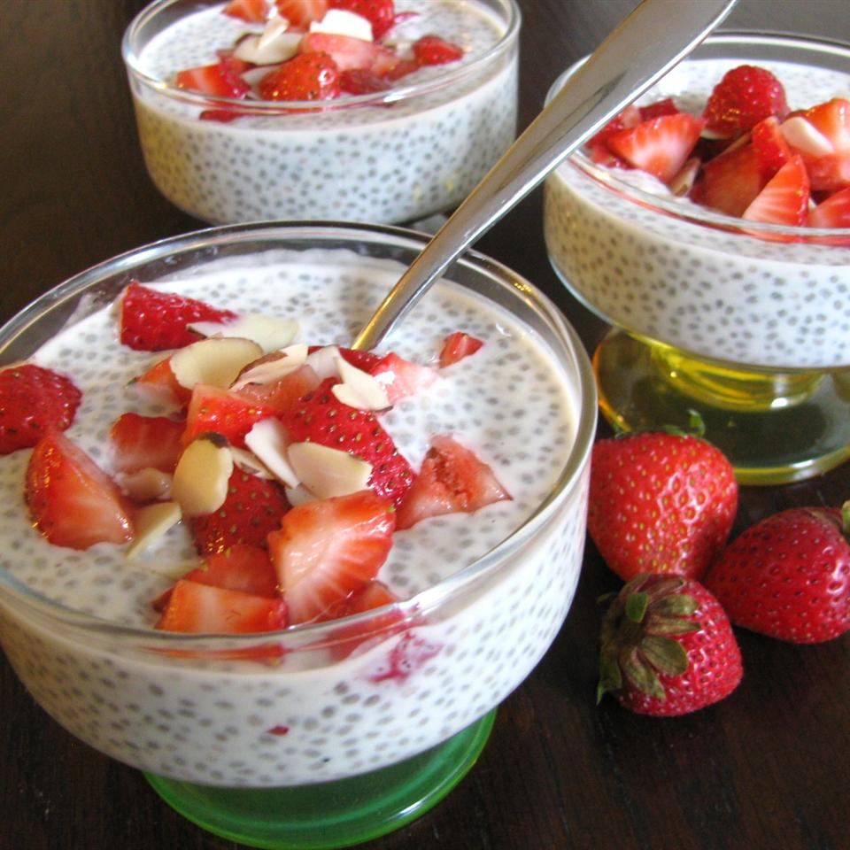

Chia Seed Pudding

Description
A healthy flavorful start to the morning or to finish the day
Ingredients
- 1 cup unsweetened vanilla-flavored almond milk
- 1 cup vanilla fat-free yogurt
- 2 tablespoons pure maple syrup
- 1 teaspoon pure vanilla extract
- 1/8 teaspoon salt
- 1/4 cup chia seeds
- 1 pint strawberries, hulled and chopped
- 4 teaspoons pure maple syrup
- 1/4 cup toasted almonds
Steps
- Whisk almond milk, yogurt, 2 tablespoons maple syrup, vanilla, and salt together in a bowl until just blended; add chia seeds, whisk to incorporate, and let the chia seeds soak for 30 minutes.
- Stir the chia seed mixture to redistribute seeds that have settled throughout the mixture.
- Cover the bowl with plastic wrap and refigerate 8 hours to overnight.
- Drizzle 4 teaspoons maple syrup over strawberries in a bowl; stir to coat.
- Add almonds to strawberries; stir.
- Spoon chia seed mixture into 4 bowls; top each with a portion of the strawberry mixture.